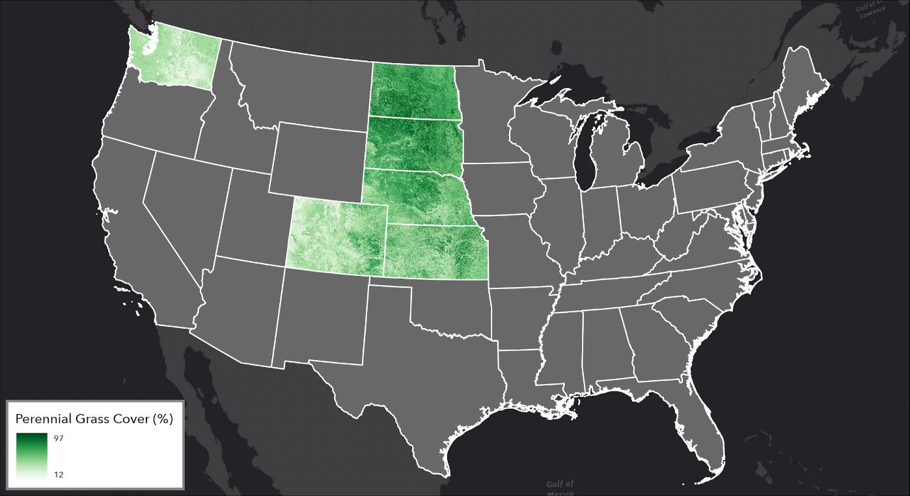

USDA Conservation Reserve Program
National grassland ecosystem modeling
Collaborated on Random Forest models of forb and grass cover using Sentinel-1 synthetic aperture radar (SAR), optical imagery, climate, and field-survey data; led spectral biodiversity modeling.
Owned Google Earth Engine coding, image processing, and code infrastructure. Integrated Landsat/Sentinel-2 imagery and NRI, AIM, and LMF field data; scaled workflows from six states to the contiguous United States with Python, Google Earth Engine, and Google Cloud through additional training data, retraining, feature engineering, and infrastructure adaptation. Automation shortened project timelines by weeks while reducing computational resource use. Vegetation outputs supported the team’s broader ecosystem-service models; the later CONUS expansion remains unpublished.
- Sentinel-1 SAR
- Python + GEE
- Machine learning
- CONUS
- Ecosystem services